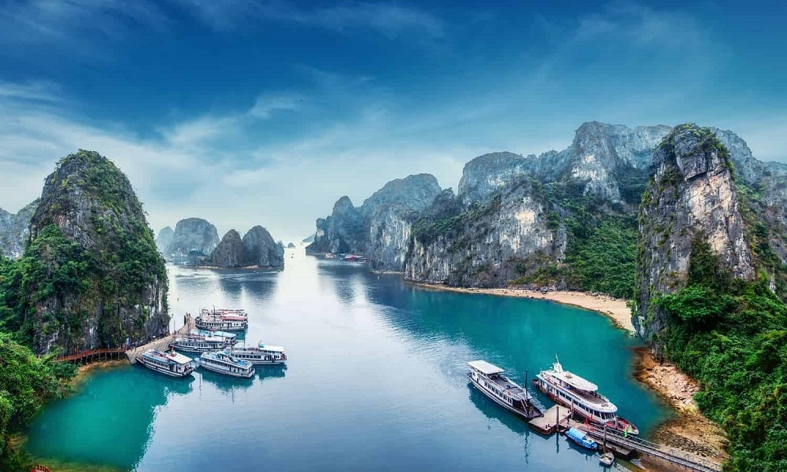
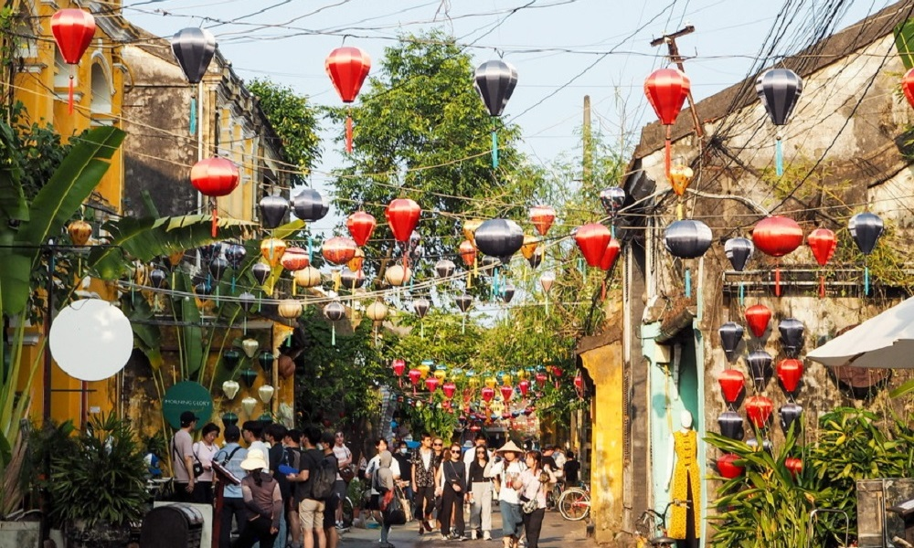
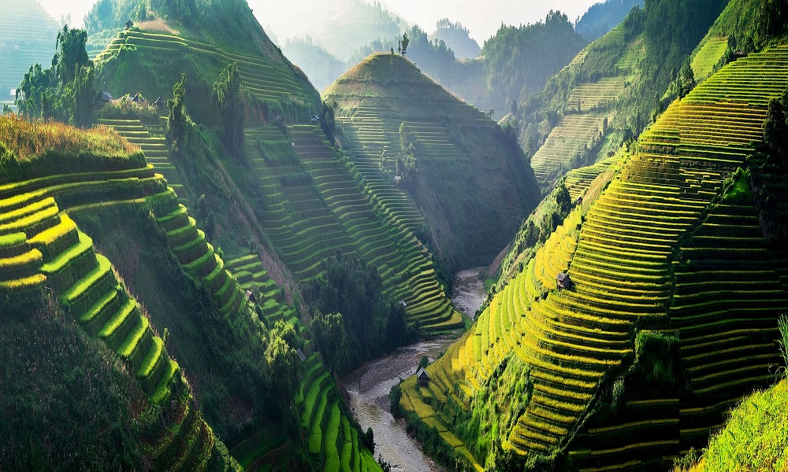
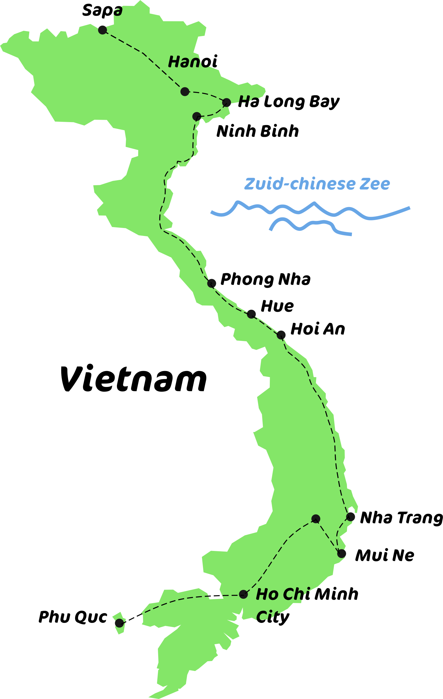
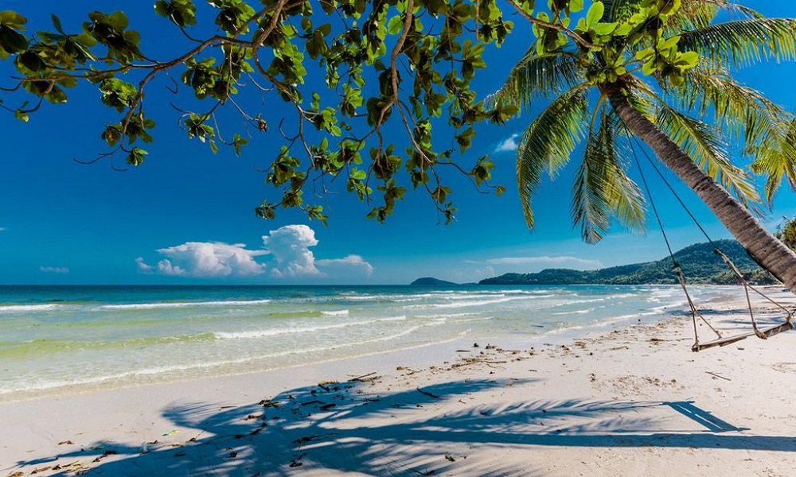
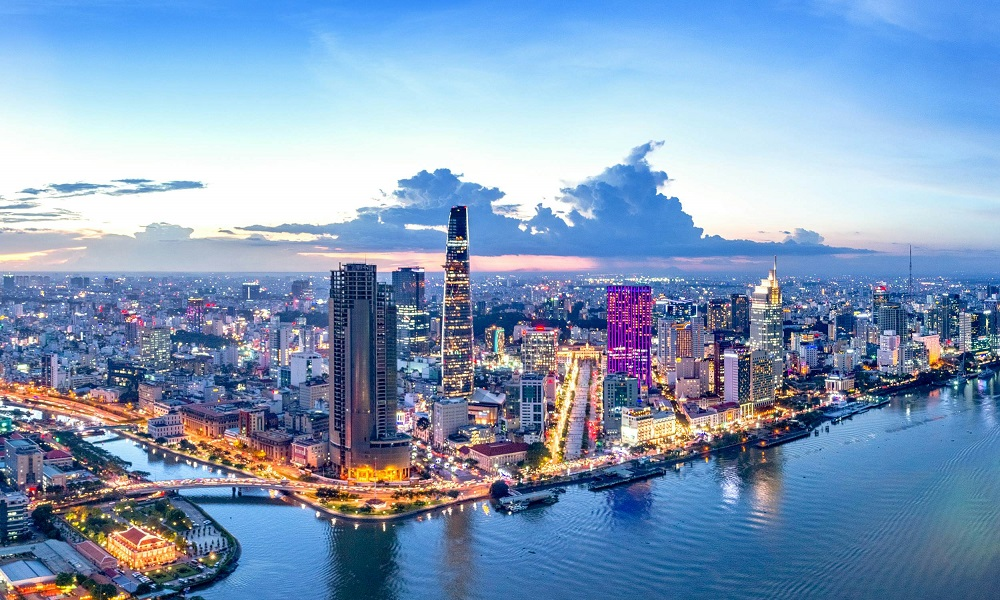
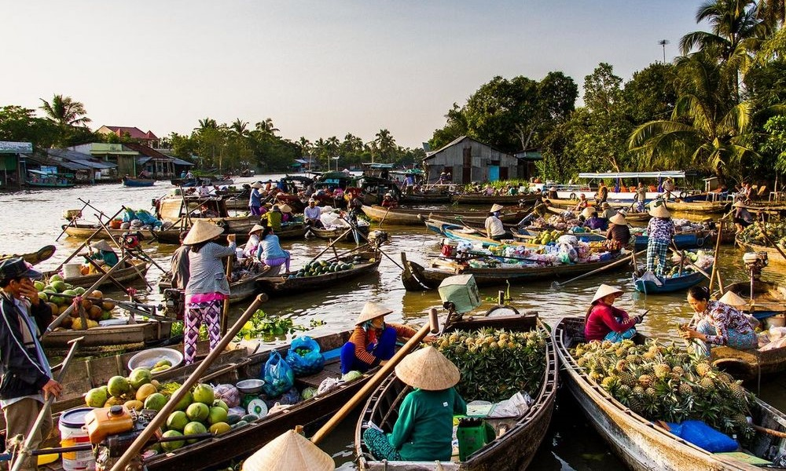
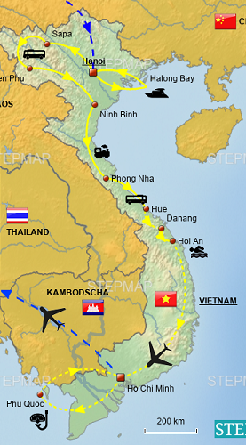
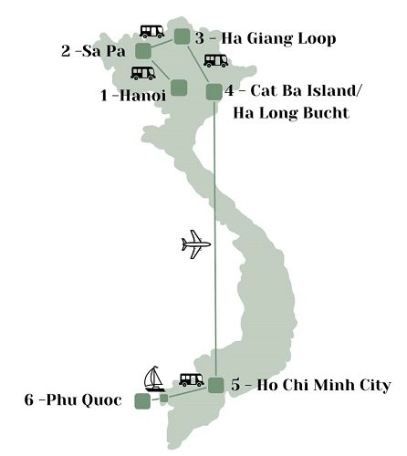
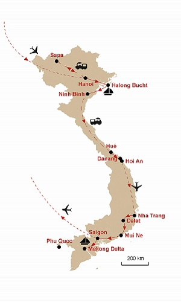

Vietnam
Holen Sie sich Inspirationen zu ihrer nächsten Vietnam-Reise!
To-Do's
Don'ts
Reiserouten
Kontakt
Highlights Vietnam

Wiki-Info "Ha-long-bay"

Wiki-Info "Hoi-an"

Wiki-Info "Saba"


Wiki-Info "Phu-quoc"

Wiki-Info "Ho-Chi-Min-City"

Wiki-Info "Mekong-Delta"
Empfehlungen
To-Do's
Nutze verschiedene Vekehrsmittel, Boot, Flugzeug, Zug, Transporter
Mache einen Kochkurs Vorort
Besuche eine Elefantenfarm
Zeige Dir von Einheimischen das Angeln
Nutze verschiedene Vekehrsmittel
Kambodscha
:Tempelbesuch bei Siam Reap, falls es die Reisezeit zulässt
Dont's
Vermeide zu viele Tempel zu besichtigen hast Du einen gesehen, kennst Du sie alle
Leih Dir keine Standard Fahrräder, diese sind untauglich
Vermeide "Golden Hand Bridge", die Attraktion ist zu touristisch und liegt meist im Nebel
Fahre nie selbst in den Großstädten
Mögliche Reiserouten
  